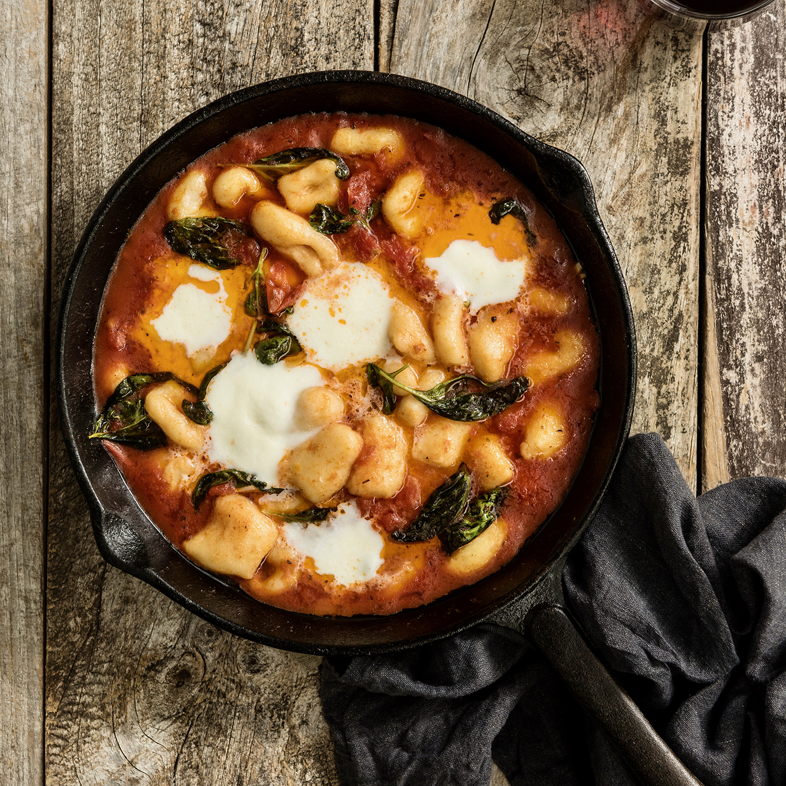

Gnocchi

Home-made gnocchi is soft, silky, delicate little mouthfuls of potato-ey pasta. And you'll be pleasantly surprised at how easy and satisfying it is to make. Whilst you can use plain flour, '00' Italian flour (which is very finely milled) works best and is easy to find these days.
INGREDIENTS
- 700-800 g agria Potatoes Scrubbed
- 1 free-range egg
- ¾ teaspoon salt
- 150 g '00' italian flour or plain flour
TOMATO BASIL SAUCE
- ¼ cup olive oil
- 4 cloves garlic sliced
- 1x 400g can Italian crushed tomatoes
- 1 generous handful of basil leaves
- 150 g fresh cow's mozzarella
- 1 small handful parmesan grated
INSTRUCTIONS
- Preheat oven to 200°C. Place whole potatoes on an oven tray and bake for about 1 hour (depending on the size of potatoes) until very tender — test with a skewer or tip of a sharp knife; it should poke right through with no resistance.
- Cut potatoes in half and peel off the skins while still warm. Push warm potato flesh through a potato ricer or a sieve (with the help of the back of a large spoon) into a large bowl. This ensures light gnocchi; whatever you do, do not mash the potato.
- Add egg and salt and mix in with a fork. Sift in flour and use your hands to bring together as a soft dough. Add a little more flour if needed — it should feel dry to the touch, but not crumbly. Knead a few times, then divide into six pieces.
- On a lightly floured surface, roll each piece out into a log about 30cm long, then cut into bite-sized 2cm pieces. Gently push the tip of your thumb or finger into the centre of each piece to make a little indent (this makes the perfect little hollow for sauce to pool in). Place in a large dish or on a tray (with a lip) dusted with flour, and shake pieces around to coat. Set aside until ready to cook.
- Bring a large pot of well-salted water to the boil and preheat oven to grill. While water is coming to the boil, make the sauce. Heat olive oil in a large heatproof fry pan on medium heat. Sizzle garlic for 1–2 minutes (but do not let it brown), then stir in crushed tomatoes. Simmer for 5-8 minutes until thickened, and season to taste with salt and pepper. Stir through basil.
- Drop about half of the gnocchi (one by one) into the boiling water and cook for a couple of minutes, scooping them out with a slotted spoon as they bob to the surface. Transfer straight into the pan of hot tomato sauce.
- Once all the gnocchi are in the pan, gently toss to coat in sauce and top with mozzarella and parmesan. Place under the oven grill for about 5 minutes or until sauce is bubbling and mozzarella is melted. Serve immediately.
Return to main page